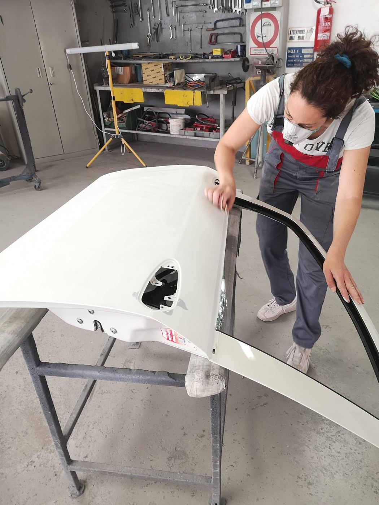
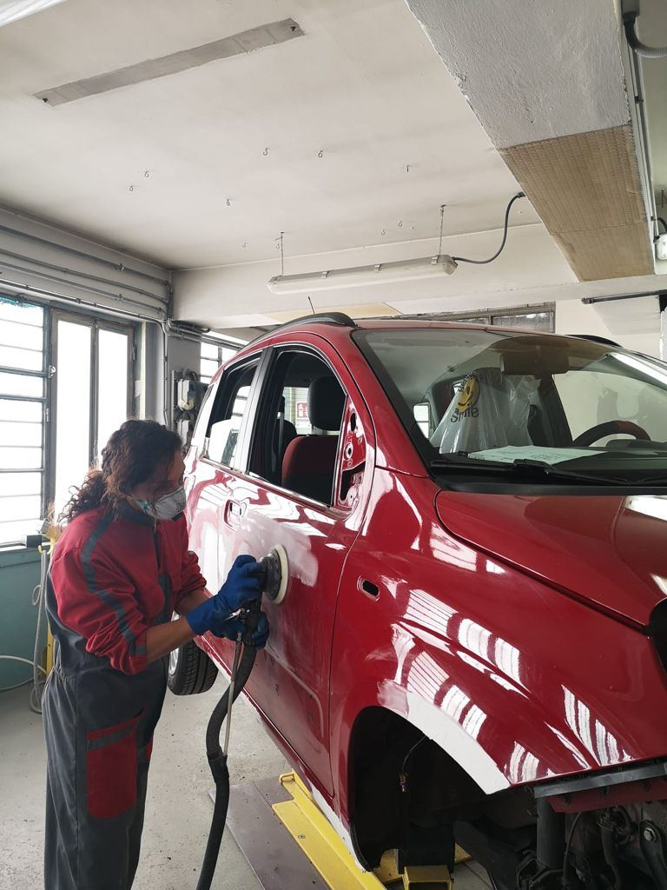
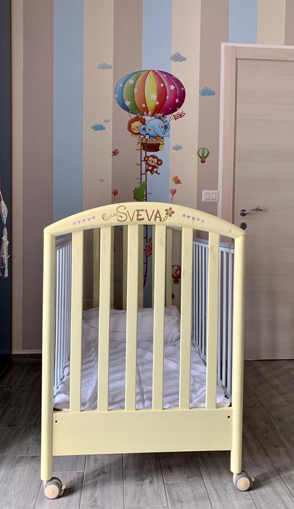
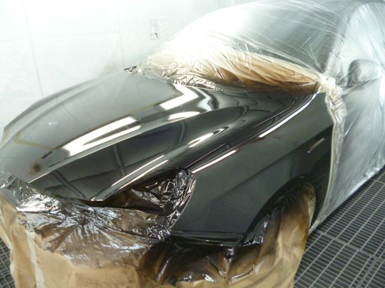
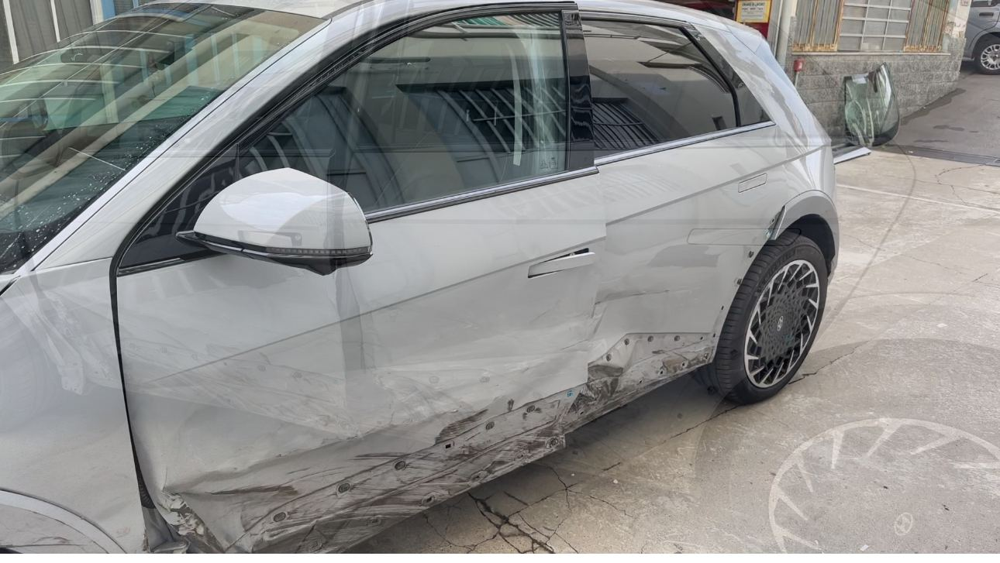
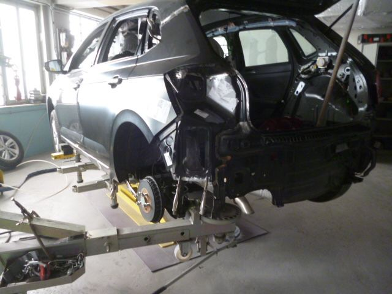
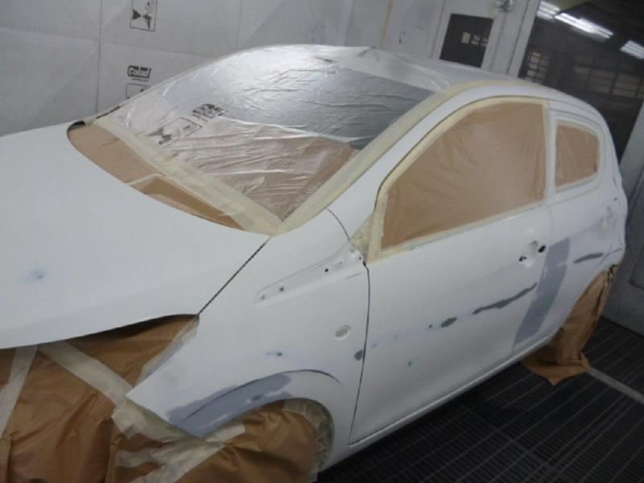
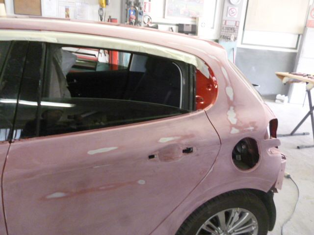

Ripariamo auto dopo un incidente, verniciamo in cabina e ci occupiamo noi della parte noiosa: la pratica del sinistro e l'auto sostitutiva per i giorni in cui la tua è da noi.
Aperti dal lunedì al venerdì, dalle 8 alle 17.


Elisa è la titolare. È lei che ti risponde al telefono, guarda il danno con te e ti dice cosa conviene fare, e sempre lei ti riconsegna la macchina.
Se c'è un'assicurazione di mezzo, ti aiuta anche con le carte. Molti clienti lo raccontano nelle recensioni: alla fine se ne è occupata lei.
«Ma che bella questa carrozzeria!!! Dopo tanto tempo finalmente ho trovato preparazione, professionalità supporto, ma soprattutto GENTILEZZA, CORTESIA E SERIETA'. Grazie Elisa.»Flora Minervino, 3 mesi fa su Google
Dal paraurti alla fiancata intera, comprese le parti strutturali.
Preparazione, stuccatura e verniciatura in cabina.
Non resti a piedi mentre lavoriamo sulla tua.
Ti aiutiamo con la burocrazia, così non devi pensarci tu.
Verniciature e personalizzazioni, anche sui cerchi.
Passa in officina, oppure manda prima qualche foto su WhatsApp.

Ci è capitato di restaurare mobili rovinati dal tempo. Questa culla, per esempio.





Alcune auto passate da noi negli ultimi mesi, tra lamiera, stucco e cabina di verniciatura.
«Ho portato la mia Dacia dopo un sinistro per una riparazione di tutta la fiancata, servizio eccellente Servizio di auto sostitutiva disponibile e personale disponibile e gentile»
Simone Veronese · 2 mesi fa«Mi sono affidato ad Elisa per restaurare dei mobili rovinati dal tempo ed i cerchioni della mia moto. Sono venuti esattamente come da me richiesti completi di personalizzazione, veramente uno spettacolo!»
Alessio Di Carlo · 6 mesi fa«Non è una carrozzeria .. e di piu . La proprietaria è gentile e di grandissimo aiuto nella burocrazia. Il lavoro finale : spettacolo . Grazie mille, senza il suo aiuto non avrei mai potuto finalizzare la mia pratica .»
Crow Song · 7 mesi fa«Mi sono recata alla carrozzeria Ferrari e devo dire che mi sono trovata molto bene . Elisa la titolare è davvero gentile , simpatica e professionale . Tempi brevi , mi ha dato l’auto sostitutiva secondo le mie esigenze (5 porte ) , si è occupata lei di tutto , e per ultimo ma non di importanza il lavoro è stato eseguito perfettamente . Consiglio questa carrozzeria»
Deborah Babila · 6 mesi faVia Forlì 56, 10149 Torino
| Lunedì – venerdì | 8:00 – 17:00 |
| Sabato | chiuso |
| Domenica | chiuso |